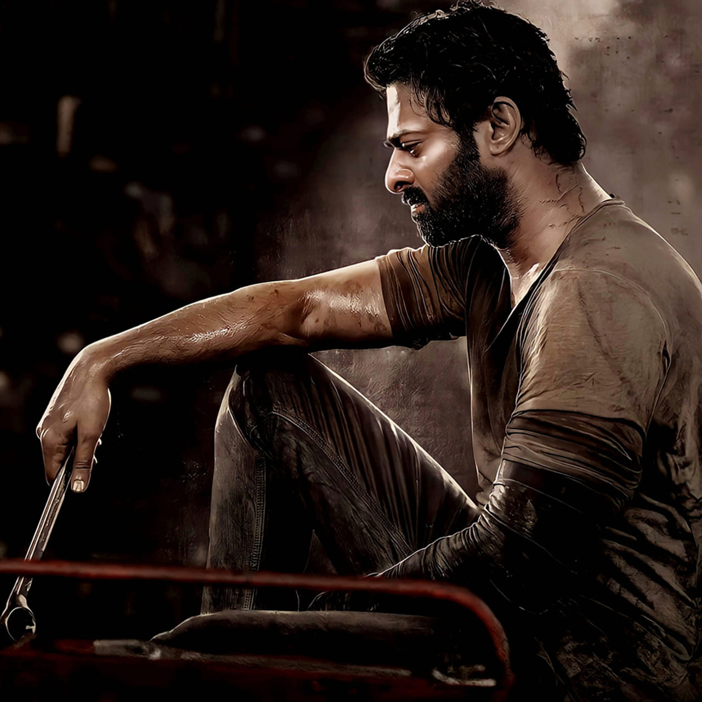
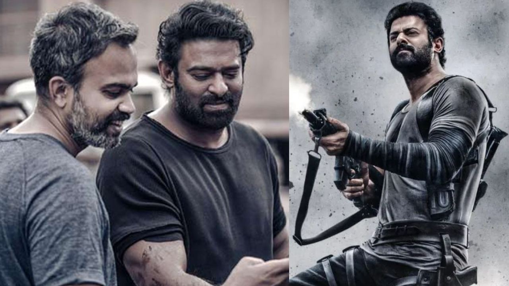

🎬 2027లో ‘సలార్-2’ షూటింగ్ పూర్తి చేస్తారా?

పాన్ ఇండియా స్టార్ ప్రభాస్ అభిమానులు ఎంతో ఆసక్తిగా ఎదురుచూస్తున్న సినిమాల్లో ‘సలార్-2’ కూడా ఒకటి. ప్రశాంత్ నీల్ దర్శకత్వంలో తెరకెక్కుతున్న ఈ సినిమాపై ఇప్పటికే భారీ అంచనాలు నెలకొన్నాయి. ‘సలార్: పార్ట్ 1 – సీజ్ఫైర్’కు కొనసాగింపుగా రూపొందుతున్న ఈ చిత్రం ఎప్పుడు ప్రేక్షకుల ముందుకు వస్తుందా అని అభిమానులు ఆసక్తిగా ఎదురుచూస్తున్నారు.
ఇటీవల ‘సలార్-2’ షూటింగ్కు సంబంధించి ఓ ఆసక్తికరమైన సమాచారం సినీ వర్గాల్లో చర్చనీయాంశంగా మారింది. ప్రస్తుతం ఈ సినిమా షూటింగ్ను కొనసాగిస్తున్నట్లు తెలుస్తోంది. భారీ యాక్షన్ సన్నివేశాలతో పాటు కీలకమైన సన్నివేశాలను చిత్రీకరించేందుకు మేకర్స్ ప్రత్యేక ప్రణాళికతో ముందుకు వెళ్తున్నారని సమాచారం. సినిమా కథకు అనుగుణంగా భారీ స్థాయిలో సెట్స్, యాక్షన్ సీక్వెన్స్లు సిద్ధం చేస్తున్నట్లు టాక్ వినిపిస్తోంది.
‘సలార్’ మొదటి భాగం విడుదలైన తర్వాత ప్రభాస్ అభిమానుల్లో రెండో భాగంపై అంచనాలు మరింత పెరిగాయి. ముఖ్యంగా మొదటి భాగం చివర్లో ఇచ్చిన ట్విస్టులు, దేవరథ పాత్రకు సంబంధించిన అంశాలు రెండో భాగంపై ఆసక్తిని పెంచాయి. దీంతో ‘సలార్-2’లో కథ మరింత భారీ స్థాయిలో ఉండబోతుందని అభిమానులు భావిస్తున్నారు.

దర్శకుడు ప్రశాంత్ నీల్ తన సినిమాల్లో యాక్షన్తో పాటు బలమైన పాత్రలు, ఎమోషనల్ సన్నివేశాలకు ప్రాధాన్యత ఇస్తుంటారు. ‘సలార్-2’లో కూడా ఇదే తరహాలో భారీ యాక్షన్ ఎపిసోడ్స్తో పాటు కథలో కీలకమైన భావోద్వేగ సన్నివేశాలను రూపొందిస్తున్నట్లు తెలుస్తోంది. ప్రభాస్ పాత్రకు మరింత ప్రాధాన్యత ఉండటంతో పాటు కథలోని ఇతర ప్రధాన పాత్రలు కూడా కీలకంగా ఉండనున్నాయని సినీ వర్గాల్లో ప్రచారం జరుగుతోంది.
ఇక ఈ సినిమాలో మలయాళ నటుడు పృథ్వీరాజ్ సుకుమారన్ పాత్ర కూడా చాలా కీలకంగా ఉండనుంది. మొదటి భాగంలో ప్రభాస్, పృథ్వీరాజ్ పాత్రల మధ్య ఉన్న స్నేహం, భావోద్వేగం ప్రేక్షకులను ఆకట్టుకున్నాయి. రెండో భాగంలో వీరిద్దరి పాత్రల మధ్య సంబంధం మరింత ఆసక్తికరంగా మారే అవకాశం ఉందని అభిమానులు అంచనా వేస్తున్నారు.

ప్రస్తుతం ‘సలార్-2’ షూటింగ్ను పూర్తి చేసి, 2027లో సినిమాను ప్రేక్షకుల ముందుకు తీసుకురావాలనే లక్ష్యంతో మేకర్స్ పనిచేస్తున్నట్లు వార్తలు వస్తున్నాయి. అయితే అధికారికంగా విడుదల తేదీపై స్పష్టత రావాల్సి ఉంది. షూటింగ్, పోస్ట్ ప్రొడక్షన్ పనులు పూర్తయిన తర్వాతే రిలీజ్ డేట్పై నిర్ణయం తీసుకునే అవకాశం ఉంది.
ఇదిలా ఉంటే, ప్రభాస్ నటిస్తున్న మరో భారీ చిత్రం ‘ది రాజా సాబ్’ కూడా అభిమానుల్లో ఆసక్తిని పెంచుతోంది. అలాగే ప్రభాస్ చేతిలో మరికొన్ని పాన్ ఇండియా ప్రాజెక్టులు ఉన్నాయి. ఈ నేపథ్యంలో ‘సలార్-2’ ఎప్పుడు విడుదలవుతుందనే అంశం మరింత ఆసక్తికరంగా మారింది.
మొత్తంగా చూస్తే, 2027లో ‘సలార్-2’ను ప్రేక్షకుల ముందుకు తీసుకురావాలనే ప్రయత్నాలు జరుగుతున్నట్లు తెలుస్తోంది. అయితే ఇది అధికారిక ప్రకటన వచ్చే వరకు ఖచ్చితమైన విడుదల తేదీగా భావించకూడదు. ప్రభాస్–ప్రశాంత్ నీల్ కాంబినేషన్పై ఉన్న భారీ అంచనాలకు తగ్గట్టుగా సినిమా రూపొందుతుందా, మొదటి భాగాన్ని మించి విజయం సాధిస్తుందా అనేది చూడాలి.
← హోమ్ పేజీకి వెళ్లండి